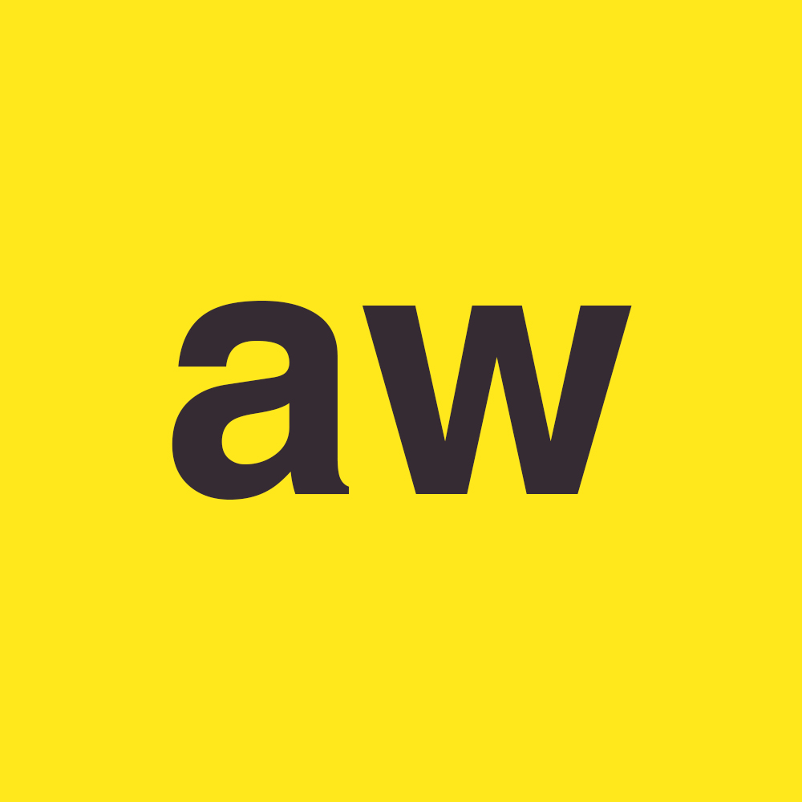

.Madrugada
Sorpresa de media noche.
La fecha oficial de lanzamiento de ''Ultraviolet Dessert'' es
el miercoles 24 de octubre 2018 12:00am
Gracias por ser del selecto grupo de personas que esta al dia con nuestras
actualizaciones.
Esto no es para todos.
Nos gusta cada vez mas este formato, intimo, en confianza.
El proximo hogar de nuestro pequeño universo cada vez esta mas cerca de ser
terminado. (Nuestra Website)
Por aqui tendran noticias mas seguido. ¿Porque por aqui y no por facebook o cualquier otro lugar?
Porque este espacio es nuestro, podemos hacer literalmente lo que queramos con el.
Oficialmente estamos en cuenta regresiva para nuestro nuevo bebe #UltravioletDessert
La cancion que desde 2016 pide luz a gritos.
Llego su momento.
Ultraviolet Dessert Postre Ultravioleta,tiene muchisima historia y sin haberse publicado aun,
Y este es el bonus de la sorpresita de media noche: fotito secreta

Estabamos en Oaxaca, terminando de tocar en Txalaparta junto a Kaoz Party
a punto de ir a un after que terminaria en Karaoke y algunas botellas rotas.
ah! y taquitos con su consome en menos de 25 pesos.
¿Quieren mas fotitos secretas con sus historias? Mandenos mensajito en cualquiera de nuestras redes.
- Acid Waves
musica
fb
insta
twitter

.xx
Hola, somos Acid Waves y esta es nuestra pagina web.
Estamos remodelando lo que sera la casa del unverso aw.
¿Vienes por informacion sobre el nuevo sencillo?
Bueno, aqui algo de informacion:
Nuestro nuevo sencillo se llama
''Ultraviolet Dessert'',
con el cerramos el ciclo de sencillos de
nuestro segundo EP ''Drive Me Dirty'',
dentro del ''DMD'' aun quedan
un par de tracks por ser publicados.
¿Cuando? Octubre y Noviembre seran
los meses donde les iremos soltando estos tracks.
Les queremos contar una pequeña historia.
Ha pasado mas de un año desde que ''Inferno Club'' y ''Addictive''
vieron la luz, los primeros dos sencillos del ''Drive Me Dirty''.
Justo en el estreno de ''Addictive'', tuvimos la oportunidad de visitar
Chiapas en 2017
nosotros al ser una banda joven, aprendimos MUCHÍSIMO
con estas visitas y sin duda empezamos ver el potencial que la musica
nos brinda
Ahi empezó nuestra OBSESIÓN por hacer mejor las cosas.
Pero habiamos
vivido ciertas experiencias dificiles, conseguimos baterista, luego lo perdimos, igual y
poco a poco les vamos contando todo.
Pero bueno, todo el ''Drive Me Dirty'' estaba
pensado para presentar en un formato, que al final no pudimos realizar.
Iniciamos la COMPOSICIÓN de nuevos temas y asi el tiempo fue pasando, justo
como cualquier banda amateur haria.
Hasta que nos pusimos una meta, que se sentia imposible
pero necesiaria: Nuestro primer tour por el pais.
Visitamos desde Chiapas hasta Monterrey. Dias de carretera, conocer muchisimas
personas, fiestas y sobre todo musica.
Regresando a nuestra ciudad
tuvimos el tiempo para analizar todo lo vivido. Mas fuerte que nunca
sabiamos que Acid Waves no tendria final.
Vivir esta experiencia nos hizo
ver como es una banda de verdad. De las que realmente logran ser profesionales,
a las que les pagan por su arte.
Es mas que solo hacer musica y tocar bien.
Entonces, nosotros sabiamos que no podiamos darles a ustedes menos que nuestra
total entrega y pasion.
Han sido meses de trabajo fuerte, poco a poco todo lo que hemos preparado.
Varias fueron las razones por las cuales tardamos mas de un año
en terminar de publicar nuestro segundo EP
entre ellas, nuestro fuerte deseo de
expresarnos artisticamente y que ustedes tengan nuestra total entrega
En aw queremos que a partir de la publicacion
de ''Ultraviolet Dessert'', sean testigos de este trabajo y se sumen a nuestra historia
que nosotros
estamos seguros, no sera corta y queremos que tu, que leiste este mensaje seas parte de ella.
Si leiste todo el mensaje, envianos un mensaje a nuestro facebook, a nuestro instagram o nuestro twitter.
Queremos sentirlos cerca, sin ustedes no podriamos tener los sueños que tanto nos emocionan.
Un besito .xx
- Acid Waves
musica
fb
insta
twitter